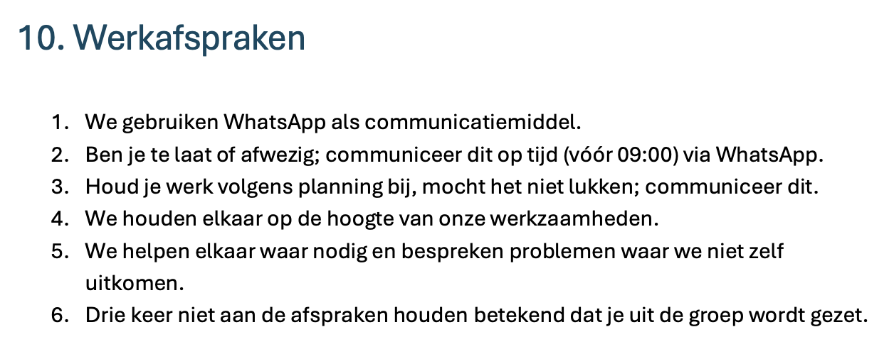
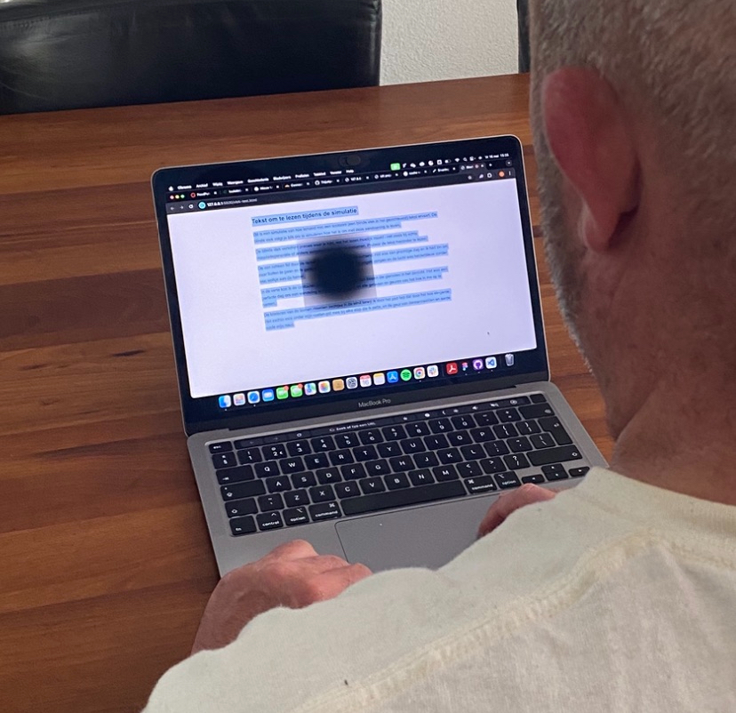
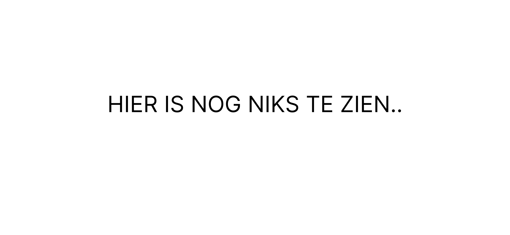
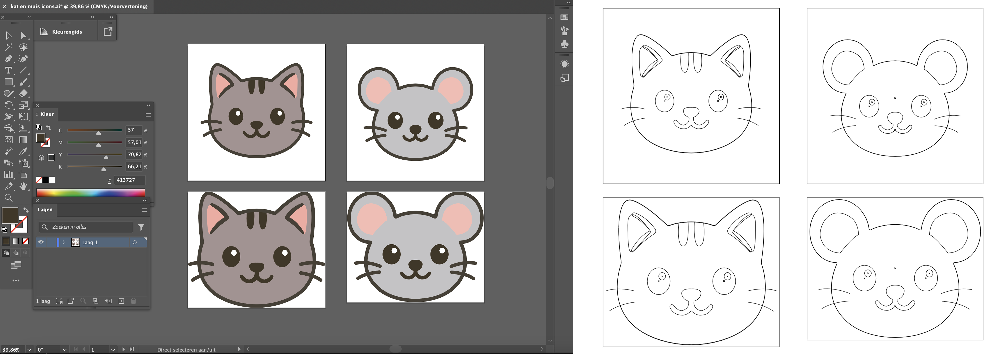
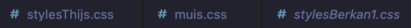
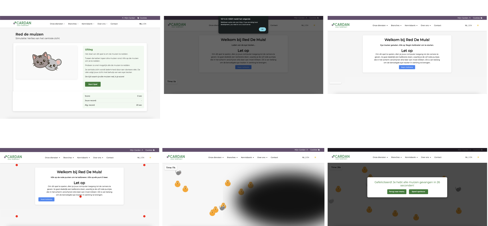
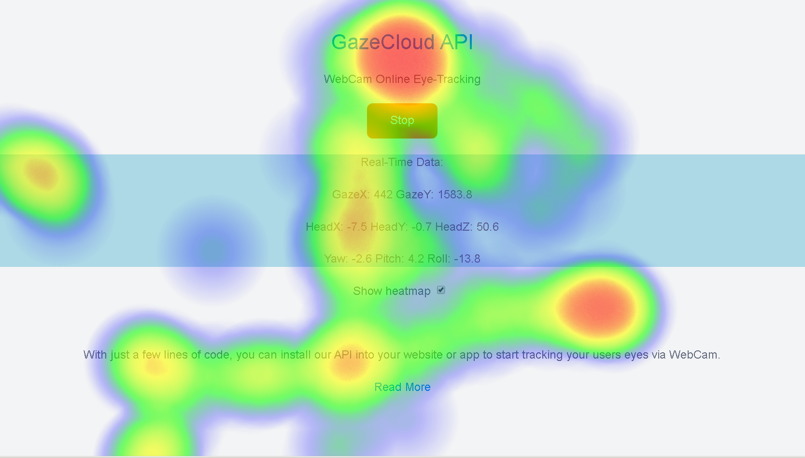

Development: Cardan
Voor het development project hebben we zelf een projectgroep van maximaal 3 personen samengesteld. Dit project sluit aan op het vorige project; het UX project. Tijdens het UX project, hebben we een concept bedacht voor een digitale simulatie die op de website van Cardan wordt verwerkt. Daar hebben we ook een prototype voor gemaakt. In dit project is het de taak om dit prototype uit te werken tot werkende webpagina's in HTML, CSS en Javascript.
'Maison de couture' was een concept die in mijn vorige projectgroep die als simulatie zou worden uitgewerkt. Omdat de projectgroep niet hetzelfde is gebleven, hebben we een ander concept uitgewerkt, een concept van een nieuwe groepsgenoot.
Mijn werkzaamheden
- Projectplan en werkafspraken
- Concept
- Usertest
- Figma prototype
- Gitlab
- Development
Projectplan en werkafspraken
Klik hier voor het volledige projectplan als PDFWe hebben aan het begin van het project gezamelijk een projectplan opgesteld. Het maken van dit projecplan vormde een duidelijk beeld van de werkzaamheden die we gingen doen en wanneer. Door hierin doelen te stellen, een planning te maken en belangrijke informatie te noteren, diende het projectplan als hulpmiddel voor een goede start voor ons project.

Ook hebben wij in het projectplan onze werkafspraken vastgesteld. Dit hebben we wederom gezamenlijk gedaan, waarbij iedereen het met de afspreken eens was.
Het maken van werkafspraken zorgt direct voor een betere communicatie en meer duidelijkheid binnen de groep.
Concept
Algemeen simulatie concept
Het concept dat wij hebben uitgewerkt tot een digitale (beperking) simulatie voor op de website van Cardan, bestaat uit drie spellen. We hebben drie verschillende spelletjes bedacht. Ieder spel bevat een andere simulatie voor een visuele beperking, namelijk; 'kokervisie', 'wazig zicht' en 'verlies van het centrale zicht'.
We hebben een pagina van Cardan nagemaakt, waarin we een keuze menu hebben verwerkt voor de drie simulaties (spellen). Omdat onze projectgroep uit drie personen bestaat, was de taakverdeling snel gemaakt; de verschillende visuele beperking soorten worden verdeeld. We verzinnen dan individueel een bijpassend spelletje die we ook individueel gaan uitwerken tot een nieuw prototype in Figma en tot een werkende web app in HTML, CSS en Javascript.
Mijn simulatie concept
Ik heb gekozen voor de soort: verlies van het centrale zicht. Het concept voor mijn spelletje is: Red de muizen. Het idee is dat de gebruiker drie muizen moet redden. Door het scherm bewegen veel katten en drie muizen rond. Wanneer de gebruiker alle muizen vangt, wordt de score (de tijd) weergegeven in het scherm. Hier krijgt de gebruiker twee opties: opnieuw spelen of teug naar menu. Tijdens het spelletje wordt de gebruiker belemmerd door een wazige vlek, die wordt bestuurd door een eye tracker. Dit simuleert 'verlies van het centrale zicht' zo realistisch mogelijk.
Samenvatting
Er wordt een keuzepagina voor de simulaties gemaakt. Hier zijn drie simulaties weergegeven voor de drie soorten van een visuele beperking. Iedere simulatie bestaat uit een spelletje, waarin de gebruiker de beperking zo realistisch mogelijk ervaart door middel van hinderende elementen, gemaakt met Javascript.
Usertest
Klik hier voor het volledige projectplan als PDF
Voor het ontwikkelen van mijn simulatie, heb ik een werkende eye tracker nodig. Voordat ik begon aan het coderen van het spelletje, heb ik uitgezocht hoe ik een eye tracker werkend kan krijgen met Javascript. Hoe dit gelukt is vertel ik bij het onderdeel 'development' van dit project.
Toen ik de eye tracker werkend kreeg, wilde ik deze usertesten. Ik heb een stukje tekst (door AI gegenereerd) op een witte pagina geplaatst. Ook heb ik de kalibratie van de test in duidelijke stappen verwerkt.
Het doel van de test was om erachter te komen hoe realistisch de eye tracker was, hoe gebruikers er mee om gaan, of ze er écht van hebben en natuurlijk of ze de eye tracker wel kunnen activeren met de kalibratie stappen.

Verbetering door usertest
De testresultaten hebben gezorgd voor verbeteringen in de ontwikkeling van de eye tracker binnen de simulatie. De veranderingen die door te test zijn toegebracht, zijn hieronder te zien. Voor meer informatie over de usertest resultaten en de conclusie: bekijk de volledige documentatie via de button (bovenaan in dit onderdeel)

Figma prototype
Het Figma prototype is ontworpen in Figma. We hebben een gezamenlijk Figma document aangemaakt, waarin we zowel de keuzepagina als de spelletjes hebben ontworpen.
Mijn ontwerp is hieronder weergegeven.

Iteraties: spel elementen
De kat en muis iteraties heb ik ontworpen in Adobe Illustrator.

Gitlab
Nadat het prototype in Figma was afgerond, hebben we een gezamenlijke Gitlab repository aangemaakt waarin we het spel gingen coderen. We gebruiken Gitlab in plaats van Github, omdat dit de voorkeur was van de groepsgenoot die de repository aanmaakte.
Door middel van Gitlab hebben we gezamenlijk in de code kunnen werken. We hebben aparte CSS documenten gebruikt zodat we elkaar hier onmogelijk konden hinderen. Ook hebben we alle veranderingen gecommit en de Gitlab goed bijgehouden.

Development
Uitwerking simulatie
Het grootste deel van het project bestond uit het ontwikkelen van de simulaties in code. Ik heb gebruik gemaakt van de codeertalen: HTML, CSS en Javascript. Hieronder is het spel te zien die ik heb uitgewerkt. Dit is de simulatie: 'verlies van het centrale zicht'.

Eye tracker

Voor het implementeren van de eye tracker, heb ik gebruik gemaakt van verschillende hulpbronnen. Eerst heb ik onderzocht of het wel mogelijk was. Ik heb op de website 'www.dev.to' informatie gevonden over het implementeren van een eye tracker in Javascript.
Met de informatie en voorbeelden van www.dev.to, lukte het om de eye tracker van webgazer werkend te krijgen. De eye tracker werkte niet erg vloeiend. Ik heb de eye tracker vloeiender en preciezer gekregen met behulp van Github Co-Pilot (AI). Ook heb ik zo de wazige vlek op de positie van de eye tracker gekregen.
Afbeelding bron: https://gazerecorder.com/gazecloudapi/